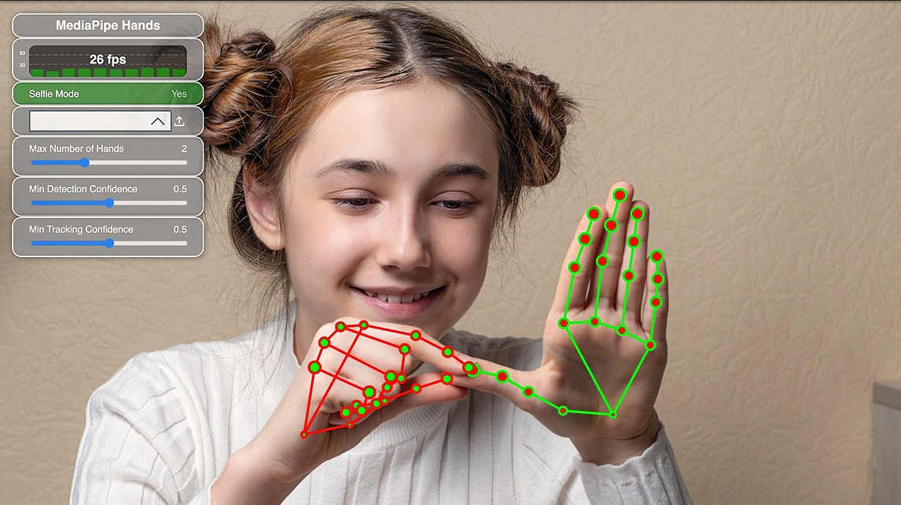

Gesture Recognitiom
Gesture recognition is a computing process that attempts to recognize and interpret human gestures through the use of mathematical algorithms. Gesture recognition is not limited to just human hand gestures, but rather can be used to recognize everything from head nods to different walking gaits.
Gesture recognition is a growing field of computer science, with an international conference devoted to gesture and facial recognition. As the field continues to grow, so will the ways that it can be utilized. Gesture recognition computer processes are designed to enhance human-computer interaction, and can occur in multiple ways, such as through the use of touch screens, a camera, or peripheral devices.
Gesture recognition technology that is vision based uses a camera and motion sensor to track user movements and translate them in real time. Newer cameras and programs allow for tracking of depth data as well, which can help improve gesture tracking. Through the use of real-time image processing, users can interact with the program immediately to achieve the desired results. For example, the Xbox Kinect relied on a camera to translate players movements as part of different games.There have also been experiments performed around using a camera to track an individual’s gait and then utilizing deep learning algorithms in order to assess their chance of falling, and to make recommendations on how to lower those chances
Module Mediapipe

What is MediaPipe? MediaPipe is an open-source framework for building pipelines to perform computer vision inference over arbitrary sensory data such as video or audio. Using MediaPipe, such a perception pipeline can be built as a graph of modular components. MediaPipe is currently in alpha at v0.
MediaPipe in Python offers developers tools to create applications that utilize computer vision and machine learning for tasks like object tracking, gesture recognition, and augmented reality experiences. in short MediaPipe is an open-source library developed by Google for building real-time, cross-platform applications that process and analyze multimedia content, primarily focused on computer vision and machine learning tasks
APPLICATION :
1. Hand Tracking :
• MediaPipe enables accurate hand tracking in real-time, allowing applications to recognize and analyze hand movements for various interactions.
2.Pose Estimation :
• It provides tools for estimating human body poses from images or videos, making it useful in applications like fitness tracking, gesture recognition, and virtual reality.
3.Objection
• MediaPipe's Objectron module is designed for 3D object detection and tracking, useful in augmented reality (AR) applications for placing virtual objects in the real world.
4.Face Detection & Recognition
• MediaPipe includes components for face detection and facial landmark recognition, which can be applied in applications like video conferencing, security, and emotion analysis.
Holistic:
5.Holistic
• The Holistic module combines face, hand, and pose components to provide a comprehensive understanding of a person's movements, enabling immersive experiences in AR and VR.
Selfie Segmentation:
6.Selfie Segmentation
MediaPipe's Selfie Segmentation model allows for real-time background removal in video conferencing or content creation applications.
These applications showcase the versatility of the MediaPipe module in addressing a wide range of computer vision and multimedia processing challenges.